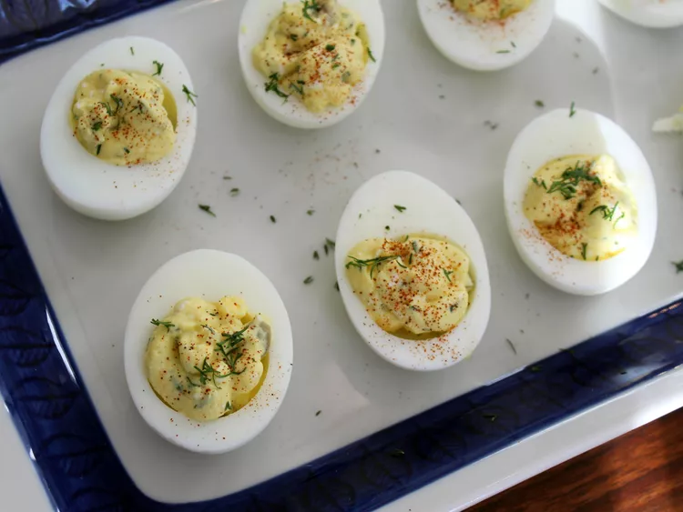

Mediterranean Devilled Eggs

Description
These Mediterranean deviled eggs use Greek yogurt, feta, olives, and fresh dill to deliver flavors reminiscent of the regions around the world's largest inland sea.
Ingredients
- 6 large hard boiled eggs, peeled
- 1/4 cup Greek yogurt
- 1 teaspoon white vinegar
- 1 tablespoon chopped fresh dill
- 2 tablespoons feta cheese
- 1 tablespoon finely chopped olives
- 1 teaspoon brine from olive jar
- 1/2 teaspoon garlic powder
- 1 pinch smoked paprika, or to taste (optional)
Steps
- Slice eggs in half lengthwise and remove yolks; set whites aside.
- Mash yolks with a fork in a small bowl. Stir in Greek yogurt, vinegar, dill, feta, olives, olive brine, and garlic powder; mix well.
- Spoon or pipe egg yolk mixture into egg whites. Sprinkle with smoked paprika. Refrigerate eggs until serving.
Back to home